Building a Corporate R Package for Pleasure and Profit
LinkedIn | Github | Blog | Subscribe
The “Great Restructuring” of our economy is underway. That’s the official name for what we know is happening: the best are rising to the top, and the mediocre are sinking to the bottom. It’s the Matthew Principle in-motion.
In Brynjolfsson and McAfee’s 2011 book Race Against the Machine, they detail how this New Economy will favor those that have the skill set or the capital to interface and invest in new technologies such as deep learning and robotics, which are becoming more ubiquitous every day.
Cal Newport’s Deep Work outlines two core abilities for thriving in this new economy:
- Be able to quickly master hard things
- Be able to produce at an elite level, in terms of both quality and speed. This need for speed (sorry) will be our focus.
Don’t repeat yourself (DRY) is a well-known maxim in software development, and most R programmers follow this rule and build functions to avoid duplicating code. But how often do you:
- Reference the same dataset in different analyses
- Create the same ODBC connection to a database
- Tinker with the same colors and themes in ggplot
- Produce markdown docs from the same template
and so on? Notice a pattern? The word “same” is sprinkled in each bullet point. I smell an opportunity to apply DRY!
If you work in a corporate or academic setting like me, you probably do these things pretty often. I’m going to show you how to wrap all of these tasks into a minimalist R package to save you time, which, as we’ve learned, is one of the keys to your success in the New Economy.
Tools
First some groundwork. I’ll assume if you work in R that you are using RStudio, which will be necessary to follow along. I’m using R version 3.5.1 on a Windows 10 machine (ahh, corporate America…). Note that the package we are about to develop is minimalist, which is a way of saying that we’re gonna cut corners to make a minimum viable product. We won’t get deep into documentation and dependencies much, as the packages we’ll require in our new package are more than likely already on your local machine.
Create an empty package project
We’ll be creating a package for the consulting firm Ketchbrook Analytics, a boutique shop from Connecticut who know their way around a %>% better than anyone.
Open RStudio and create a project in a new directory:
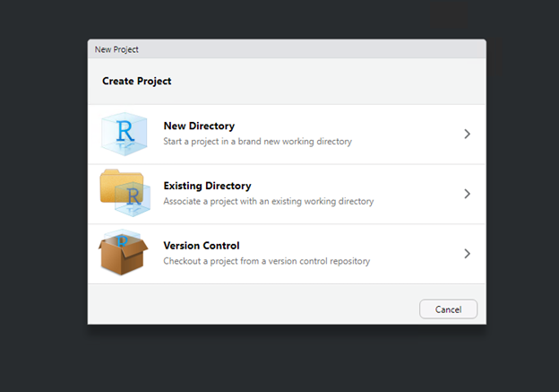
Select R Package and give it a name. I’ll call mine ketchR.
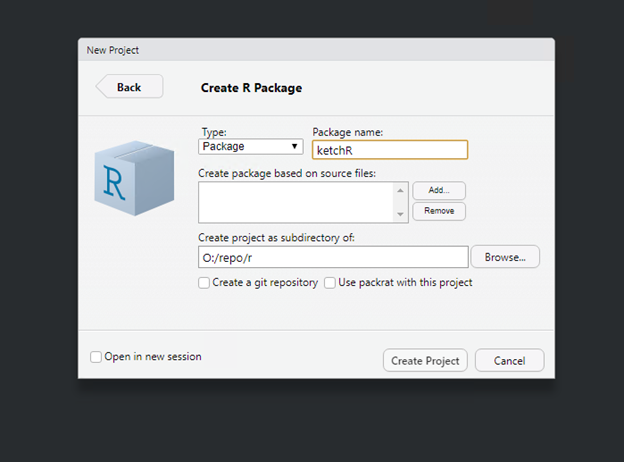
RStudio will now start a new session with an example “hello” function. Looks like we’re ready to get down to business.
Custom functions
Let’s start by adding a function to our package. A common task at Ketchbrook is mapping customer data with an outline for market area or footprint. We can easily wrap that into a simple function.
Create a new R file and name it ketchR.R. We’ll put all of our functions in here.
# To generate the footprint_polys data
footprint_poly <- function() {
#' Returns object of class SpatialPolygons of the AgC footprint.
#' Utilizes the Tigris:: package.
require(tidyverse)
require(tigris)
require(sf)
# Get County Polygons
states.raw <- tigris::states()
states <- states.raw[states.raw@data$STUSPS %in% c("CA", "OR", "WA"),]
states <- sf::st_as_sfc(states)
states <- sf::st_union(states)
states <- as(states, 'Spatial')
return(states)
}So what we’ve done is create a function that utilizes the tigris package to grab shapefiles for states in our footprint. The function then unions those states into one contiguous polygon so we can easily overlay this using leaflet, ggmap, etc.
Try your new function out:
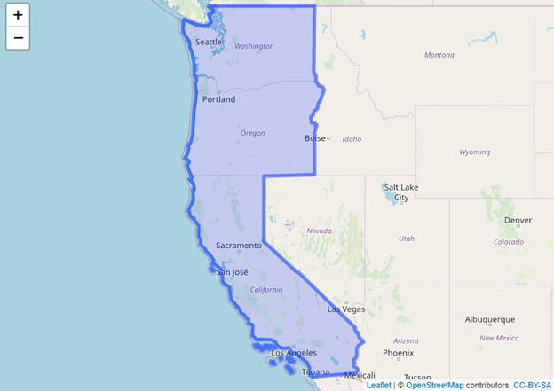
There is no limit to what kinds of custom functions you can add in your package. Machine learning algs, customer segmentation, whatever you want you can throw in a function with easy access in your package.
Datasets
Let’s stay on our geospatial bent. Branch or store-level analysis is common in companies spread out over a large geographical region. In our example, Ketchbrook’s client has eight branches from Tijuana to Seattle. Instead of manually storing and importing a CSV or R data file each time we need to reference these locations, we can simply save the data set to our package.
In order to add a dataset to our package, we first need to pull it into our local environment either by reading a csv or grabbing it from somewhere else. I simply read in a csv from my local PC:
branches <- read.csv("O:\\exchange\\branches.csv", header = T)This is what the data set looks like:
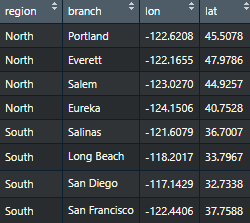
Now, we have to put this data in a very specific place, or our package won’t be able to find it. Like when my wife hides the dishwasher so I’m reluctantly forced to place dirty dishes on the counter.
First, create a folder in your current directory called “data.” Your directory should look like this now, btw:
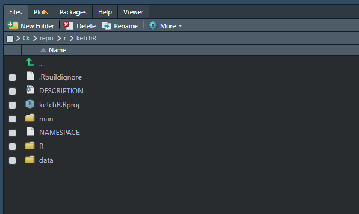
Bonus points: use the terminal feature in RStudio to create the directory easily:
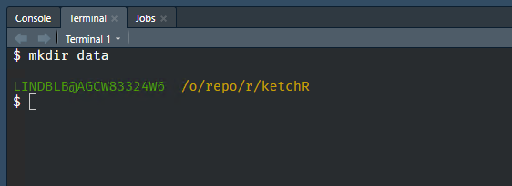
Now we need to save this branches data set into our new folder as an .RData file:
save(branches, file = "data/branches.RData")Now, we build
Let’s test this package out while there’s still a good chance we didn’t mess anything up. When we build the package, we are compiling it into the actual package as we know it. In RStudio, this is super simple. Navigate to the “Build” tab, and click “Install and Restart.” If you’ve followed along, you shouldn’t see any errors, but if you do see errors, try updating your local packages.
Now, we should be able to call our package directly and use our branches dataset:
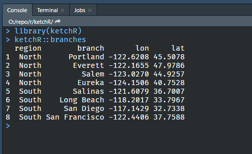
Cool, that works. Now let’s plot our branches with Leaflet quick to make sure footprint_poly() worked:
library(leaflet)
leaflet() %>%
addTiles() %>%
addPolygons(data = ketchR::footprint_poly()) %>%
addCircles(data = branches,
lat = branches$lat,
lng = branches$lon,
radius = 40000,
stroke = F,
color = "red")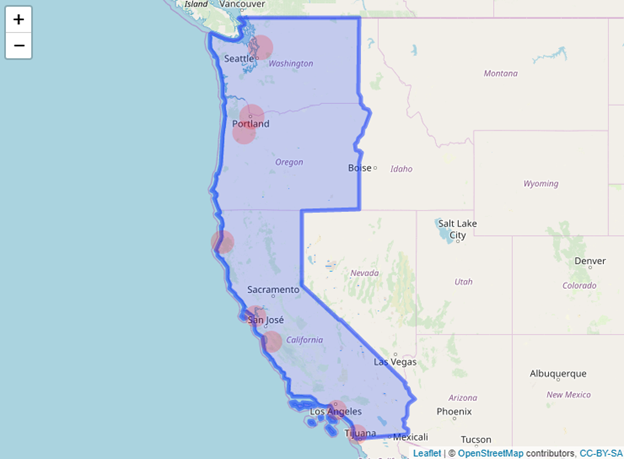
Niiiice.
Database connections
One of the most common tasks in data science is pulling data from databases. Let’s say that Ketchbrook stores data in a SQL Server. Instead of manually copy and pasting a connection script or relying on the RStudio session to cache the connection string, let’s just make a damn function.
get_db <- function(query = "SELECT TOP 10 * FROM datas.dbo.Customers") {
#' Pull data from database
#' @param query: enter a SQL query; Microsoft SQL syntax please
require(odbc)
con <- dbConnect(odbc(),
Driver = "SQL Server",
Server = "datas",
Database = "dataserver",
UID = "user",
PWD = rstudioapi::askForSecret("password"),
Port = 6969)
z <- odbc::dbGetQuery(con, query)
return(z)
odbc::dbDisconnect(con)
}Here, we’re building a function that lets us enter any query we want to bang against this SQL Server. The function creates the connection, prompts us to enter the password each time (we don’t store passwords in code…) and closes the connection when it’s through.
Let’s take it a step further. Many times you may pull a generic SELECT * query in order to leverage dplyr to do your real data munging. In this case, it’s easier to just make a function that does just that.
Let’s make another function that pulls a SELECT * FROM Customers.
get_customers <- function() {
#' Pull most recent customer data from db - datascience.agc_Customers
require(odbc)
con <- dbConnect(odbc(),
Driver = "SQL Server",
Server = "datas",
Database = "dataserver",
UID = "user",
PWD = rstudioapi::askForSecret("password"),
Port = 6969)
query1 <- "SELECT * FROM datas.dbo.Customers"
z <- odbc::dbGetQuery(con, query1)
return(z)
odbc::dbDisconnect(con)
}Ahh, this alone saved me quarters-of-hours each week once I started using it in my own practice. Think hard about any piece of code that you may copy and paste on a regular basis — that’s a candidate for your packages stable of functions.
Branded ggplot visualizations
Ok now we’re getting to the primo honey, the real time-savers, the analyst-impresser parts of our package. We’re going to make it easy to produce consistent data visualizations which reflect a company’s image with custom colors and themes.
Although I personally believe the viridis palette is the best color scheme of all time, it doesn’t necessarily line up with Ketchbrook’s corporate color palette. So let’s make our own set of functions to use Ketchbrook’s palette is a ‘lazy’ way. (Big thanks to this Simon Jackson’s great article).
Get the colors
Let’s pull the colors directly from their website. We can use the Chrome plugin Colorzilla to pull the colors we need.
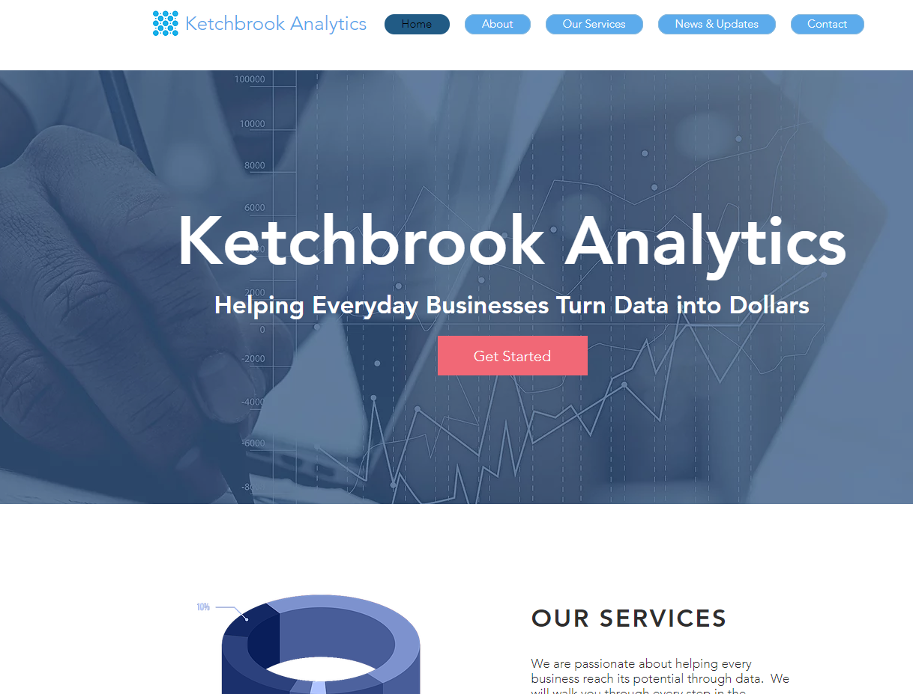
Take those hex color codes and paste them into this chunk like so:
# Palette main colors
ketch.styles <- c(
`salmon` = "#F16876",
`light_blue`= "#00A7E6",
`light_grey` = "#E8ECF8",
`brown` = "#796C68")This will give us a nice palette that has colors different enough for categorical data, and similar enough for continuous data. We can even split this up into two separate sub-palettes for this very purpose:
# Create separate palettes
agc.palettes <- list(
`main` = styles('salmon','light_blue', 'brown', 'light_grey'),
`cool` = styles('light_blue', 'light_grey')
)Create the functions
I’m not going to go through these functions line by line; if you have questions reach out to me at bradley.lindblad[at]gmail[dot]com, create an issue on the Github repo. Here is the full code snippet:
# Palette main colors
ketch.styles <- c(
`salmon` = "#F16876",
`light_blue`= "#00A7E6",
`light_grey` = "#E8ECF8",
`brown` = "#796C68")
# Fn to extract them by hex codes
styles <- function(...) {
cols <- c(...)
if (is.null(cols))
return (ketch.styles)
ketch.styles[cols]
}
# Create separate palettes
ketch.palettes <- list(
`main` = styles('salmon','light_blue', 'brown', 'light_grey'),
`cool` = styles('light_blue', 'light_grey')
)
# Fn to access them
ketch_pal <- function(palette = "main", reverse = FALSE, ...) {
pal <- ketch.palettes[[palette]]
if (reverse) pal <- rev(pal)
colorRampPalette(pal, ...)
}
# Fn for customer scale
scale_color_ketch <- function(palette = "main", discrete = TRUE, reverse = FALSE, ...) {
pal <- ketch_pal(palette = palette, reverse = reverse)
#' Scale color using AgC color palette.
#' @param palette: main, greens or greys
#' @param discrete: T or F
#' @param reverse: reverse the direction of the color scheme
if (discrete) {
discrete_scale("colour", paste0("ketch_", palette), palette = pal, ...)
} else {
scale_color_gradientn(colours = pal(256), ...)
}
}
scale_fill_ketch <- function(palette = "main", discrete = TRUE, reverse = FALSE, ...) {
#' Scale fill using AgC color palette.
#' @param palette: main, greens or greys
#' @param discrete: T or F
#' @param reverse: reverse the direction of the color scheme
pal <- ketch_pal(palette = palette, reverse = reverse)
if (discrete) {
discrete_scale("fill", paste0("ketch_", palette), palette = pal, ...)
} else {
scale_fill_gradientn(colours = pal(256), ...)
}
}Let’s test it out:
ggplot(mtcars) +
geom_point(aes(mpg, disp, color = qsec), alpha = 0.5, size = 6) +
ketchR::scale_color_ketch(palette = "main", discrete = F) +
theme_minimal()produces:
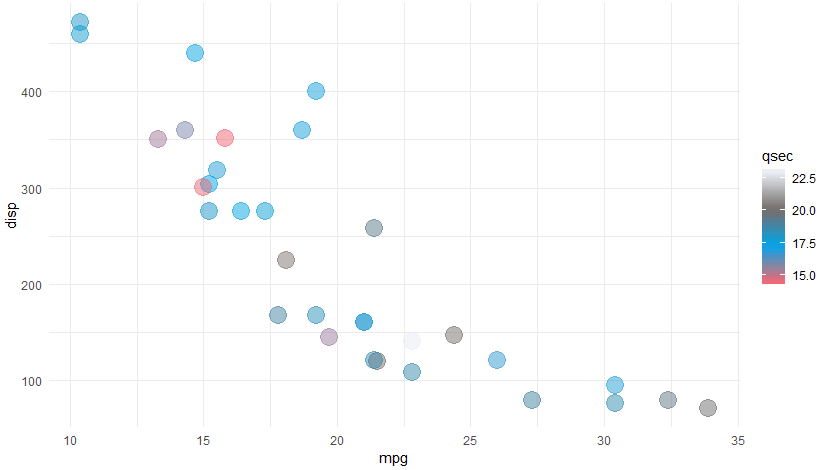
Markdown templates
Now that we’ve fetched the data and plotted the data much more quickly, the final step is to communicate the results of our analysis. Again, we want to be able to do this quickly and consistently. A custom markdown template is in order.
I found this part to be the hardest to get right, as everything needs to be in the right place within the file structure, so follow closely. (Most of the credit here goes to this article by Chester Ismay.)
1. Create skeleton directory
dir.create("ketchbrookTemplate/inst/rmarkdown/templates/report/skeleton",
recursive = TRUE)This creates a nested directory that will hold our template .Rmd and .yaml files. You should have a new folder in your directory called “ketchbrookTemplate”:
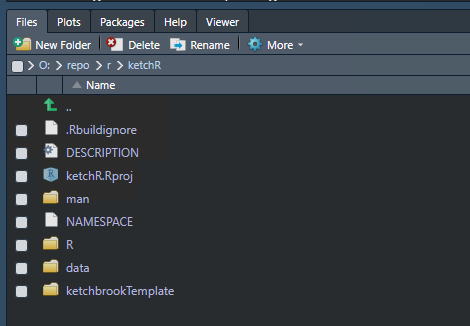
2. Create skeleton.Rmd
Next we create a new RMarkdown file:
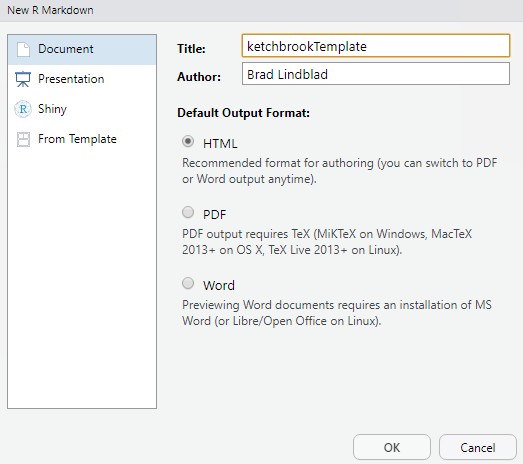
This will give us a basic RMarkdown file like this:
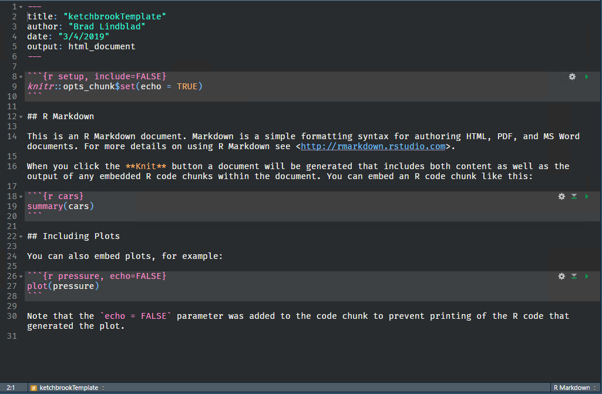
At this point let’s modify the template to fit our needs. First I’ll replace the top matter with a theme that I’ve found to work well for me, feel free to rip it off:
---
title: "ketchbrookTemplate"
author: Brad Lindblad
output:
prettydoc::html_pretty:
theme: cayman
number_sections: yes
toc: yes
pdf_document:
number_sections: yes
toc: yes
rmarkdown::html_document:
theme: cayman
html_notebook:
number_sections: yes
theme: journal
toc: yes
header-includes:
- \setlength{\parindent}{2em}
- \setlength{\parskip}{0em}
date: February 05, 2018
always_allow_html: yes
#bibliography: bibliography.bib
abstract: "Your text block here"
---I like to follow an analysis template, so this is the top matter combined with my basic EDA template:
--
title: "Customer Service Survey EDA"
author: Brad Lindblad, MBA
output:
pdf_document:
number_sections: yes
toc: yes
html_notebook:
number_sections: yes
theme: journal
toc: yes
rmarkdown::html_document:
theme: cayman
prettydoc::html_pretty:
theme: cayman
number_sections: yes
toc: yes
header-includes:
- \setlength{\parindent}{2em}
- \setlength{\parskip}{0em}
date: September 20, 2018
always_allow_html: yes
bibliography: bibliography.bib
abstract: "Your text block here"
---
Writing Your Report
Now that you've done the necessary preparation, you can begin writing your report. To start, keep in mind there is a simple structure you should follow. Below you'll see the sections in order along with descriptions of each part.
Introduction
Summarize the purpose of the report and summarize the data / subject.
Include important contextual information about the reason for the report.
Summarize your analysis questions, your conclusions, and briefly outline the report.
Body - Four Sections
Data Section - Include written descriptions of data and follow with relevant spreadsheets.
Methods Section - Explain how you gathered and analyzed data.
Analysis Section - Explain what you analyzed. Include any charts here.
Results - Describe the results of your analysis.
Conclusions
Restate the questions from your introduction.
Restate important results.
Include any recommendations for additional data as needed.
Appendix
Include the details of your data and process here.
Include any secondary data, including references.
::: {.cell}
:::
# Introduction
# Data
# Methods
# Analysis
# Results
# Conclusions
# Appendix
# ReferencesSave this file in the skeleton folder and we’re done here.
3. Create the yaml file
Next we need to create a yaml file. Simply create a new text document called “template.yaml” in RStudio and save it like you see in this picture:
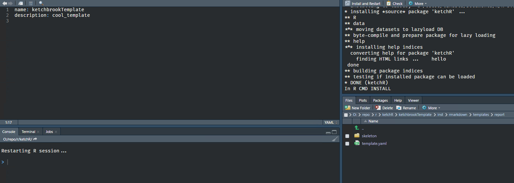
Rebuild the package and open a new RMarkdown document, select “From Template” and you should see your new template available:
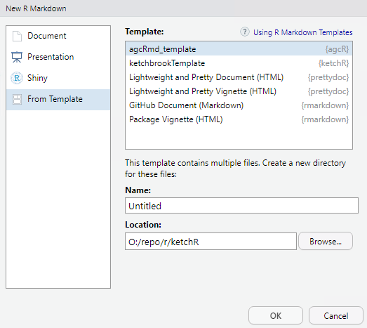
Sweet. You can now knit to html pretty and have sweet output like this:
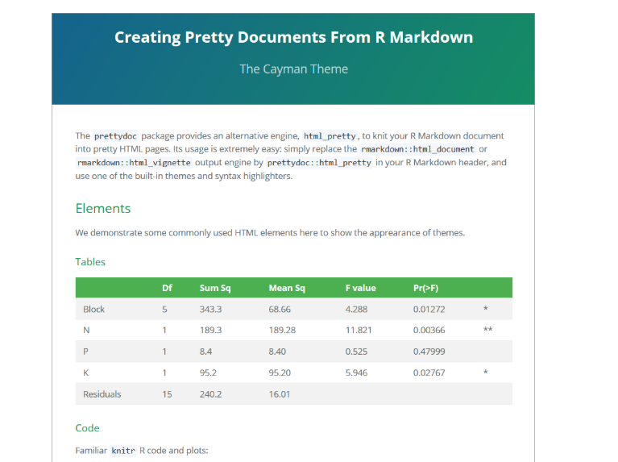
If you run into problems, make sure your file structure matches this:
├───inst
│ └───rmarkdown
│ └───templates
│ └───ketchbrookTemplate
│ │ template.yaml
│ │
│ └───skeleton
│ skeleton.nb.html
│ skeleton.RmdWhat’s next?
So we’ve essentially made a bomb package that will let you do everything just a little more quickly and a little better: pull data, reference common data, create data viz and communicate results.
From here, you can use the package locally, or push it to a remote Github repository to spread the code among your team.
The full code for this package is available at the Github repo set up for it. Feel free to fork it and make it your own. I’m not good at goodbye’s so I’m just gonna go.
Want more content like this? Subscribe here